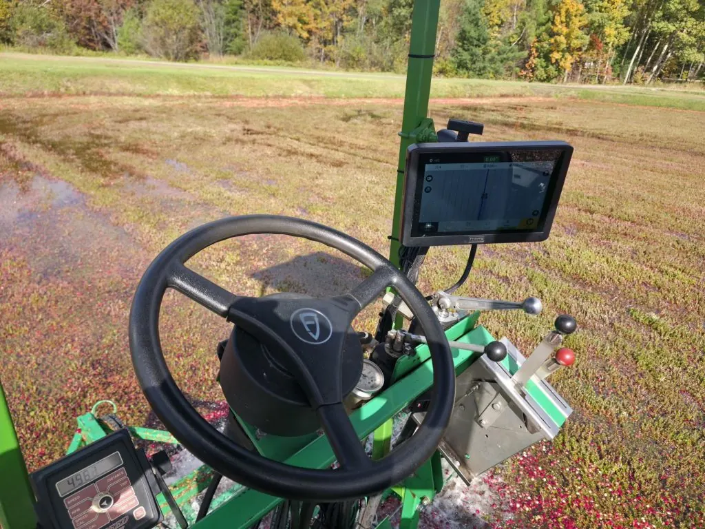
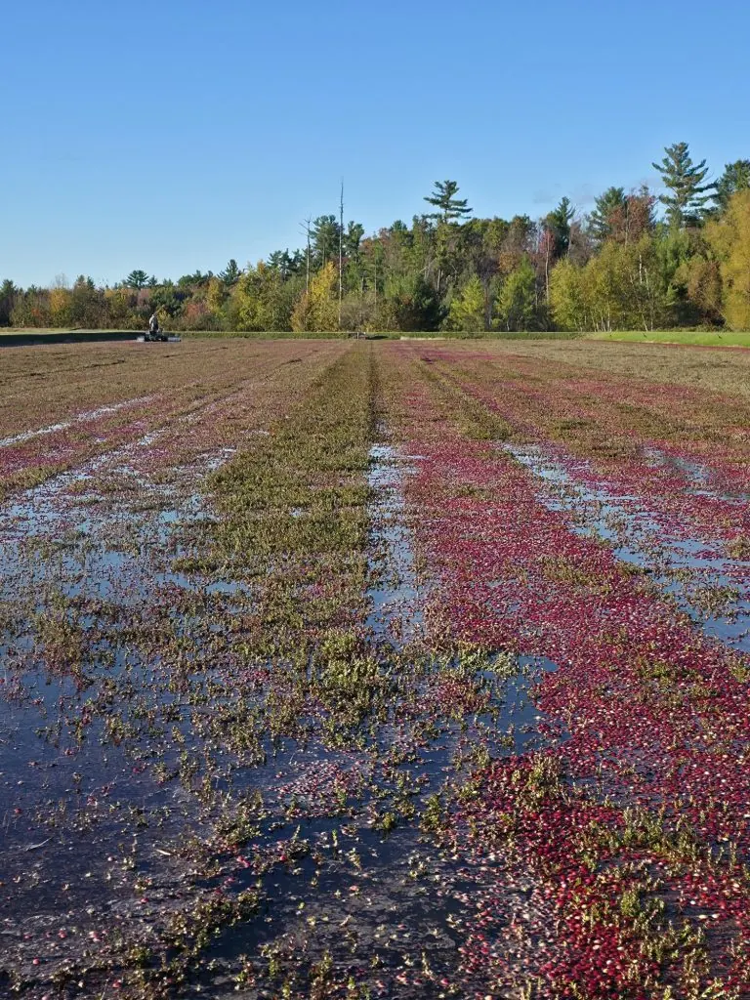

Shop FJD equipment, with a local team behind it
Auto steer, RTK, grade control and autonomous machines, all 16 items from the store in one price list.
- Local support in Warrens, WI
- Professional installation available
- Free pickup
- 12-month FJD warranty

Guidance and steering
5 items
GPS/RTK auto steer for your existing tractor with 2.5 cm pass-to-pass accuracy. Includes accessory box.
Top-tier AT2 auto steer with a 12.1-inch display, faster processor, automatic U-turn, and ISOBUS.
Wireless excavator guidance with about ±3 cm accuracy for ditches, ponds, drainage, and slopes.
Professional 3D excavator guidance with CAD design import and standard bucket support.
3D GPS dozer control with automatic blade control.
GNSS and survey
4 items
RTK base station with tripod. About 5 km working range, up to 30 km with the long range amplifier.
Lightweight GNSS RTK rover with tilt compensation, sold with a survey pole.
Advanced RTK rover with OLED screen, IMU tilt, and dual cameras for AR stakeout.
External radio that extends the V1 base station’s range up to about 30 km.
Land leveling
1 item
GNSS land leveling: survey, design, and automatic blade control in one system.
Accessories
4 items
Wireless keypad for running FJD auto steer without touching the screen.
WiFi camera that shows your implement on the FJD auto steer display, day or night.
Survey pole for FJD V1 series rovers.
Sturdy tripod for the FJD T2 base station or a total station.
Autonomous
1 item
Autonomous electric orchard platform for spraying, mowing, and more.
Special orders
1 item
Need something not listed, a replacement part, or dozer or grader control? We can order the full FJD lineup.
The cart and checkout live on the real store, so they aren’t part of this demo. Prices are the ones listed there today. To order here, call (608) 378-4526.
Not sure which one fits?
Call and talk it through with the people who install and support it.
- Visit
- 19205 Bittersweet Ave, Warrens, WI 54666
- Hours
- Monday to Friday, 8:00 AM to 5:00 PM. Saturday by appointment.
